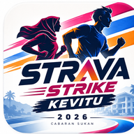

URUS SETIA
STRAVA STRIKE KEVITU 2026
AKSES URUS SETIA
Admin Login
Log masuk untuk menyemak bukti aktiviti peserta.
Sesi tamat selepas 2 jam tanpa aktiviti. Log masuk semula selepas memuat semula halaman.
← Akses pesertaKAWALAN GLOBAL
Akses eSIJIL 2026
Kawal akses peserta untuk menyemak dan memuat turun eSIJIL mereka.
Status belum disahkan dengan server.
AKTIVITI MENUNGGU SEMAKAN
0 aktiviti menunggu semakan
Memuatkan aktiviti...
Tiada aktiviti menunggu semakan.